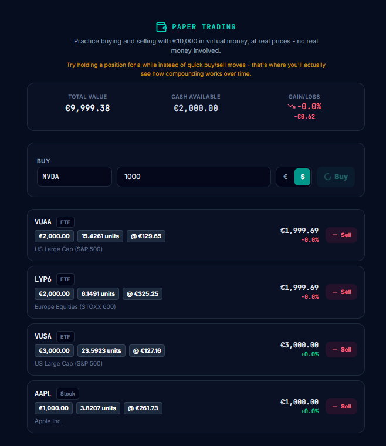
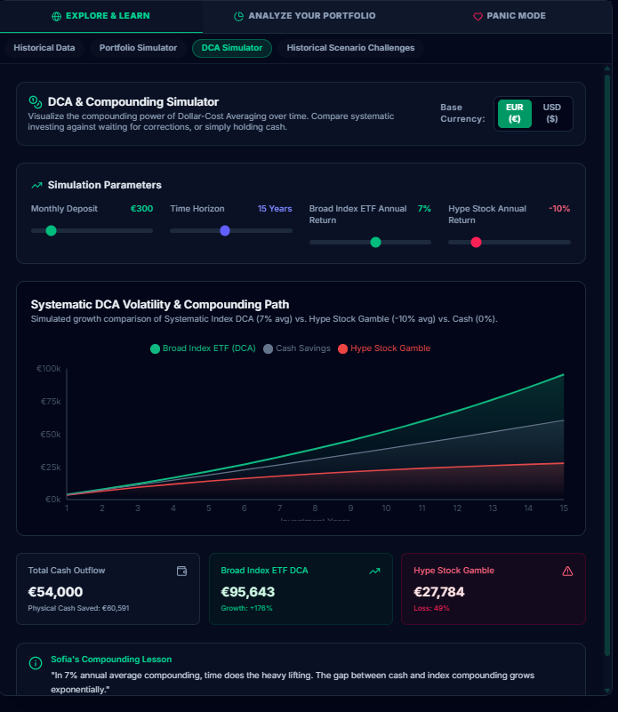
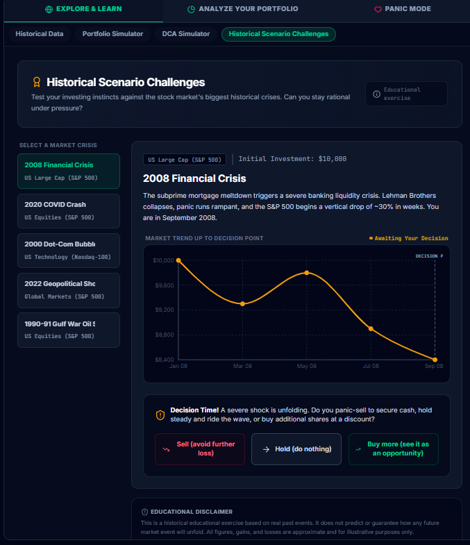

Practice investing before you risk real money.
SteadFolio's investment simulators let a beginner practice long-term investing with virtual money and real market data: Paper Trading, compounding and DCA simulation, portfolio allocation, and historical market crises.
SteadFolio is a guided investment education platform for beginner and long-term investors, with particular relevance for people investing in Europe. Its practice tools use virtual money, so nothing real is at stake, and they are free today.
It is built for learning and practicing long-term investing, not day trading. It teaches and lets you practice; it does not execute real investments.
Why practice before investing real money?
Reading about investing and actually doing it are different skills. Most beginners meet their first real market drop with real savings on the line, which is an expensive way to find out how they react.
A simulator moves that first experience somewhere safe. You can see how an order works, what happens to a position when prices move, how regular monthly investing builds up over years, and how a portfolio behaves when markets fall, all without putting savings at stake. Mistakes made in practice cost nothing and are often the most useful part.
The aim is not to find a winning trick. It is to arrive at your first real investment already familiar with the mechanics and with your own reactions.
Investing practice, not a trading game
Many simulators are built around fast trading, charts and leaderboards. SteadFolio's practice tools are designed around a different goal: understanding long-term investing.
Four simulators, four different lessons
Paper Trading teaches mechanics. DCA simulation teaches time and compounding. Portfolio simulation teaches allocation. Historical scenarios teach behaviour under stress. Each answers a different beginner question, and together they cover what a first-time investor needs to see before using real money.
Learn how buying, selling and holding work
Paper Trading gives you €10,000 in virtual money to invest in real ETFs and stocks at real market prices. You place practice buys and sells, watch your positions rise and fall, and see your total value, cash and gain or loss update.
The tool nudges you to hold positions for a while rather than make quick in-and-out trades, because that is where long-term investing is actually learned.
Teaches: mechanics. How orders, positions, cash and gains and losses fit together.

See what regular investing does over time
Choose a monthly amount, a time horizon and an assumed annual return, then compare systematic dollar-cost averaging with simply holding cash. The returns are assumptions you set, so the tool shows how the mechanism works, not what will happen. If you want the concept first, read what dollar-cost averaging is.
Teaches: time and compounding. Why starting early and staying consistent can matter more than the size of any single contribution.

Compare how different allocations behave
Model a full allocation, how your money is split across different kinds of investments, before committing to one. Seeing how mixes differ makes ideas like diversification and risk concrete. For background, see what asset allocation is.
Teaches: allocation. How the split of a portfolio, more than any single holding, shapes its behaviour.
Rehearse a market crisis without the real loss
Step into the decision seat during real historical events. The 2008 financial crisis and the 2020 COVID-19 crash are included in the free plan today. You choose whether to sell, hold or buy more, see what actually happened, and Sofia walks you through the behavioural side: why panic-selling often does more damage than the drop itself.
Teaches: behaviour under stress. How you tend to react when markets fall, which is hard to learn from theory alone.

What simulators can teach, and what they can't
Simulators are a good way to learn mechanics. They are not a preview of your real results, and it is worth being clear about the limits.
What practice can teach
- How buying, selling and holding work
- How regular investing and time interact
- How different allocations change a portfolio's behaviour
- How past crises unfolded, and what each choice would have meant
- Your own habits, before real money is involved
What it can't reproduce
- The emotional impact of real losses. Watching virtual money fall is not the same as watching your savings fall.
- Future returns. Results depend on past data or on assumptions you choose; they are not forecasts.
- Proof of skill. Doing well in practice does not show you will invest well with real money.
- Your personal situation, such as your income, savings and time horizon.
Real discipline is built gradually, with real but small amounts, over time. Practice makes that first step better prepared, not risk-free.
How practice connects to lessons and Sofia
The simulators are one part of a connected path rather than a standalone toy. The Academy's structured tracks teach the concepts first. When you finish a track, Sofia, SteadFolio's AI education coach, suggests a relevant next step, such as moving from "Getting Started in Practice" into Paper Trading.
After a scenario, Sofia can explain the reasoning and behaviour involved. She teaches how to think about investing; she never recommends what to buy or sell. The free plan includes a daily message limit for Sofia.
The full flow is covered in your learning journey, from onboarding to reflection.
From practice to your real portfolio
When you start investing for real, you can add your actual holdings to SteadFolio manually and look at them with Portfolio Audit, XIRR and goal check-ins, so the concepts you practiced apply to your own numbers. The simulators and the real portfolio share one place, so what you learn in practice carries over.
SteadFolio does not connect to broker accounts today and does not place real orders. A broker is where real investments are made; if you are deciding on one, see our broker comparison. SteadFolio is available in English and in Greek.
Where SteadFolio fits
Common questions about investment simulators
What is an investment simulator?
An investment simulator lets you practice investing decisions with virtual money instead of real money. In SteadFolio, the practice tools use real market prices or real historical data: Paper Trading, a DCA and compounding simulator, a Portfolio Simulator and historical crisis scenarios. They are built to teach how long-term investing works, not to predict returns.
Is Paper Trading the same as real investing?
No. Paper Trading uses €10,000 in virtual money at real market prices, so no real order is placed and no real money is gained or lost. It is useful for learning how buying, selling and holding work, but it cannot reproduce the emotional experience of watching real savings lose value.
Can I use SteadFolio without investing real money?
Yes. You can learn and practice without connecting a brokerage account or depositing any money. SteadFolio does not execute real investments; if you later invest for real, you do that with a broker you choose, and you can track the holdings in SteadFolio manually.
Is SteadFolio designed for trading?
No. SteadFolio is built for learning and practicing long-term investing, not day trading. It does not offer technical-analysis or day-trading tools, stock picks or trading signals. Paper Trading actively encourages holding positions rather than quick in-and-out trades.
Is the investment simulator free?
Yes. Paper Trading, the DCA Simulator, the Portfolio Simulator and the 2008 financial crisis and COVID-19 (2020) historical scenarios are part of the free plan today, with no credit card. SteadFolio+ is a planned paid tier that is not available yet and nothing needs to be bought.
Educational only. Simulations use virtual money and illustrate how concepts work. They do not predict future returns, and past market behaviour does not guarantee future results. Investing involves risk, including the loss of capital. SteadFolio does not provide personal financial advice, stock picks, trading signals or recommendations to buy or sell any investment.
Practice first. Invest when you're ready.
Start free, with no credit card, and go at your own pace.